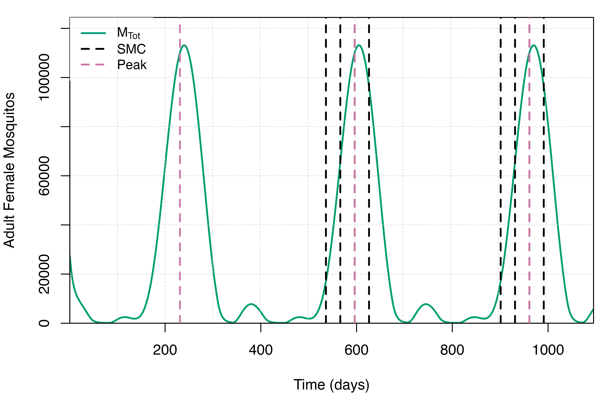

Mass Drug Administration
MDA.Rmd
suppressPackageStartupMessages(library(ggplot2))
library(malariasimulation)
library(malariaEquilibrium)
library(reshape2)Parameterisation
We are going to set the default parameters to run the simulation from an equilibrium.
year <- 365
sim_length <- 3 * year
human_population <- 1000
starting_EIR <- 50
simparams <- get_parameters(
list(
human_population = human_population,
model_seasonality = TRUE, # Let's try a bi-modal model
g0 = 0.28605,
g = c(0.20636, -0.0740318, -0.0009293),
h = c(0.173743, -0.0730962, -0.116019)
)
)
simparams <- set_equilibrium(simparams, starting_EIR)
simparams <- set_drugs(simparams, list(SP_AQ_params))
# Plotting functions
plot_prevalence <- function(output) {
ggplot(output) + geom_line(
aes(x = timestep, y = (n_detect_730_3650/n_730_3650))) +
labs(x = "timestep", y = "PfPR2-10")
}
plot_state_counts <- function(output) {
ggplot(
melt(
output[c(
'timestep',
'S_count',
'D_count',
'A_count',
'U_count',
'Tr_count'
)],
id.vars='timestep'
)
) + geom_line(
aes(
x = timestep,
y = value,
group = variable,
color = variable
)
)
}
add_mda_lines <- function(plot, events) {
plot + geom_vline(
data = events,
mapping = aes(xintercept=timestep),
color="blue"
) + geom_text(
data = events,
mapping = aes(x = timestep, y = 0, label = name),
size = 4,
angle = 90,
vjust = -0.4,
hjust = 0
)
}Then we can run the simulation for a variety of MDA strategies:
MDA
This is a dose of SP-AQ to 80% of the population once a year.
mdaparams <- simparams
# Add MDA strategy
mda_events = data.frame(
timestep = c(1, 2) * 365,
name=c("MDA 1", "MDA 2")
)
mdaparams <- set_mda(
mdaparams,
drug = 1,
timesteps = mda_events$timestep,
coverages = rep(.8, 2),
min_age = 0,
max_age = 200 * 365
)
output <- run_simulation(sim_length, mdaparams)
add_mda_lines(plot_state_counts(output), mda_events)
add_mda_lines(plot_prevalence(output), mda_events)
SMC
This is a dose of SP-AQ to 90% of 2 - 11 year olds once a year a month before the peak season for mosquitos.
smcparams <- simparams
# Add SMC strategy
peak <- peak_season_offset(smcparams)
smc_events = data.frame(
timestep = c(1, 2) * 365 + peak - 30,
name=c("SMC 1", "SMC 2")
)
smcparams <- set_smc(
smcparams,
drug = 1,
timesteps = smc_events$timestep,
coverages = rep(.9, 2),
min_age = 2 * 365 - 1,
max_age = 11 * 365
)
output <- run_simulation(sim_length, smcparams)
add_mda_lines(plot_state_counts(output), smc_events)
add_mda_lines(plot_prevalence(output), smc_events)